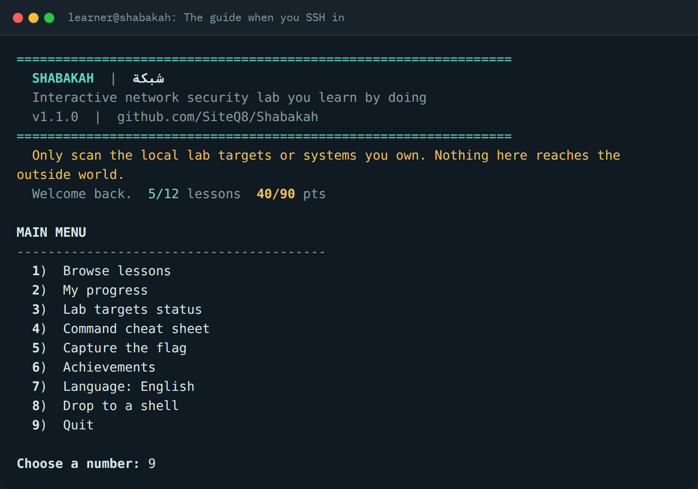

Open source network security lab
A network security lab you SSH into.
Shabakah is one self contained Docker container. You start it, you SSH in, and a bilingual guide walks you through fifteen hands on lessons against real services running beside it. Every challenge is checked live, so you learn by doing, not by reading.
How it works
Three commands and you are inside.
No lab to wire up, no cloud to pay for, nothing that reaches the outside world. Everything lives in the container.
Run the container
Pull the image or build it, then bring it up. It runs anywhere Docker runs.
docker compose up -d --build
SSH in
Log in as the learner. The guide greets you and remembers where you left off.
ssh -p 2222 learner@localhost
Learn by doing
Read a lesson, run the tools on the live targets, then let the guide check your answer.
netsec check 03 8080,8443,9000
What is inside
More than a set of notes.
Shabakah is a guide, a set of live targets, and a game, wrapped in one container so nothing gets in your way.
A guide that checks your work
The netsec program is your instructor in the terminal. It carries every lesson, shows the objective and the challenge, then verifies your answer against the running services in real time. Right answers mark the lesson complete and stick between sessions.
Capture the flag
Six flags are hidden across the targets, each reachable with the tools in the box. Hunt them, submit them, watch your score climb to a hundred and ten.
Achievements
Seven badges unlock as you clear lessons and capture flags, all the way to Shabakah master.
English and Arabic
Every lesson, prompt, and hint is written in both languages. Switch any time and your progress follows.
Real tools
nmap, tcpdump, openssl, dig, netcat, hping3 and more are already installed. The same tools you use on the job.
Safe by design
Every service binds inside the container and nothing reaches the outside world. You practise the aggressive tools with no risk to anyone, which is the only honest way to learn them.
Learn the whole surface
Recon, banner grabbing, HTTP and TLS inspection, service enumeration, DNS, UDP, packet capture, firewalling, and chaining findings into access. A full first pass over network security.
A look inside
This is what you see.
Real screens from the guide, straight out of the terminal.

The guide greets you when you SSH in and remembers your progress.
Capture the flag
Six flags. A hundred and ten points. One container.
Each flag sits somewhere a careless operator would leave it, and each is reachable with a tool you already have. Find one, then run netsec submit flag{...}.
Recon rookie
The web service has a page it should not. A first curl finds it.
Source reader
The home page hides a note in its HTML source, not in the text you see.
Left the door open
robots.txt points at paths that were never meant to be public. One holds a config backup.
Undocumented
A service answers more commands than it admits to. Enumeration finds the one it hides.
One leak, three doors
A cleartext console reuses a password you already saw cross the wire. Reuse is the whole lesson.
Hidden in plain sight
The TLS certificate carries a field it never should. Read the whole subject, not just the common name.
Clean board
Capture all five and the master badge is yours. Track it any time with netsec ctf.
The curriculum
Fifteen lessons, each with a live challenge.
Every lesson ends with something to prove on the running targets, checked by the guide.
Practice targets
Six live services to work against.
Real services, running beside the guide, each one there so a lesson has something honest to find.
Cleartext web
An HTTP service with a telling banner, hidden paths, and a page it should never expose.
TLS web
The same service over TLS with a self signed certificate to inspect and reason about.
Enumeration service
A raw TCP service with a chatty banner and an undocumented command to uncover.
Cleartext console
A forgotten admin console that reuses a password, the kind that turns one leak into three.
Lab DNS resolver
An offline resolver for the shabakah.lab zone, with A, MX, and TXT records to query.
UDP banner service
A UDP service that stays silent until you speak its protocol, which is the point.
The toolbox
The tools are already installed.
Nothing to apt install mid lesson. The container ships with a working network security kit and the guide to drive it.
Inside the container
Drive it with netsec
netsecopen the interactive guidenetsec lesson 05read one lessonnetsec check 05 <a>check a challenge answernetsec ctfshow the capture the flag boardnetsec submit flag{...}submit a flag you foundnetsec achievementsshow your badgesnetsec targetssee which targets are upnetsec lang arswitch to ArabicQuick start
Up and running in a minute.
You need Docker. Everything else is in the image.
git clone https://github.com/SiteQ8/Shabakah.git cd Shabakah docker compose up -d --build ssh -p 2222 learner@localhost # the password is set in docker-compose.yml, default: shabakah
Prefer the prebuilt image? Pull it from the GitHub container registry.
docker run -d --name shabakah --cap-add NET_ADMIN -p 2222:22 ghcr.io/siteq8/shabakah:latest ssh -p 2222 learner@localhost
Questions
Good to know.
Is any of this dangerous to run?
No. Every practice service binds inside the container and nothing reaches the outside world. You get to run nmap, tcpdump, and hping3 the aggressive way with no risk to anyone, which is exactly why a contained lab is the right place to learn them.
Do I need to know the command line already?
A little comfort with a terminal helps, but the guide shows you the exact commands for each lesson and the cheat sheet is one keypress away. Beginners can follow along and the challenges teach by repetition.
Does it need an internet connection?
Only to pull or build the image the first time. After that everything runs offline inside the container, including the lab DNS resolver.
Can I use it to teach a class or run a workshop?
Yes. It is MIT licensed, bilingual, and each learner just needs their own container. Progress and flags are per learner, so a room can work through it at its own pace.
Where do I report a problem or suggest a lesson?
Open an issue on the GitHub repository. Contributions of new lessons and targets are welcome.
Open a terminal and begin.
Fifteen lessons, six live targets, and a hunt for six flags are waiting inside one container.